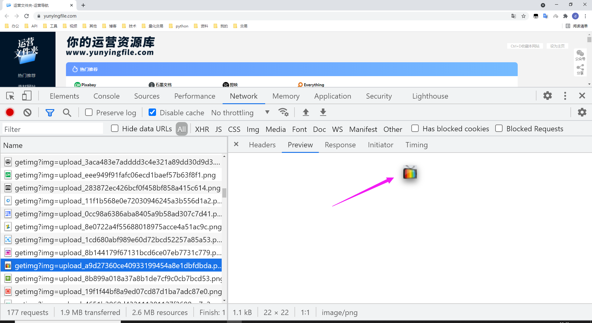
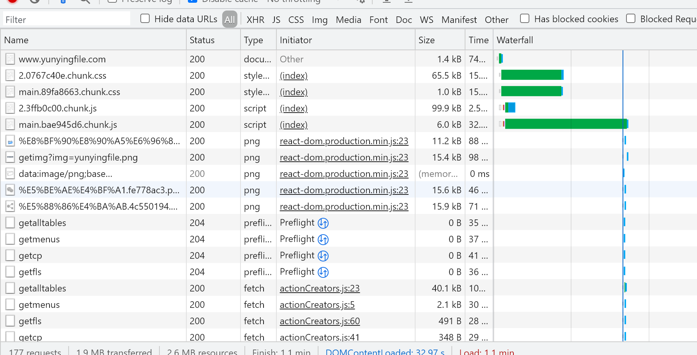

第 4 章：优化图片
1. 阅读参考资料
- 选择正确的图片格式
- 选择正确的压缩级别
- 使用 Imagemin 压缩图像
- 用视频替换 GIF 动画以加快页面加载
- 提供响应式图像
- 提供尺寸正确的图像
- 使用 WebP 图像
- 使用图像 CDN 优化图像
- 使用延迟加载提高加载速度
- 延迟加载图像
- 延迟加载视频
- 浏览器内置图像延迟加载
- 使用 lazysizes 延迟加载图像
2. 选择合适的图片格式
操作步骤如下：
- 启动网站
wd06，npx http-server wd06 - 用 Lighthouse 对网站
wd06做桌面性能评测 - 查看 Lighthouse 的优化建议，是否有
Serve images in next-gen formats - 复制
wd06文件夹，cp -r wd06 image-format && cd image-format - 根据优化建议详情，修改两个图片的格式，把
flower_photo.jpg改成 webp 格式，把flower_logo.png改成 svg 格式 - 全局安装
cwebp，npm i -g cwebp - 用
cwebp做图片格式转换，cwebp flower_photo.jpg -o flower_photo.webp - 检查 webp 和 jpg 格式的图片文件大小的差异，
ls -lh - 用 IMG2GO 将
flower_photo.png转换成 svg 格式 - 检查 svg 和 jpg 格式的图片文件大小的差异，
ls -lh - 用
svgo压缩 SVG 图片，npx svgo flower_logo.svg -o flower_logo.min.svg - 观察压缩前后 SVG 图片尺寸的变化，
ls -al *.svg - 思考 SVG 尺寸变化背后的原因
- 修改
index.html文件，使用两个新格式的图片 - 启动网站
image-format，npx http-server image-format - 用 Lighthouse 对
image-format网站做桌面性能评测 - 查看 Lighthouse 的优化建议，是否有
Serve images in next-gen formats
3. 使用正确的图片尺寸
操作步骤如下：
- 启动网站
wd06，npx http-server wd06 - 用 Lighthouse 对网站
wd06做桌面性能评测 - 查看 Lighthouse 的优化建议，是否有
Properly size images - 复制
wd06文件夹，cp -r wd06 image-dimensions && cd image-dimensions - 检查 Elements 面板，查看
flower_logo.png的 CSS 宽高属性 - 检查
flower_logo.png图片的宽高属性，flower_logo.png图片是否发生了缩放 - 安装 ImageMagic 工具，
sudo yum install -y ImageMagick - 调整图片
flower_logo.png的尺寸，convert flower_logo.png -resize 50x50 flower_logo_50x50.png - 修改
index.html代码，使用修改后的图片 - 启动网站
image-dimensions，npx http-server image-dimensions - 用 Lighthouse 对
image-dimensions网站做桌面性能评测 - 查看 Lighthouse 的优化建议，是否有
Properly size images - 思考为什么不调整
flower_photo.jpg的尺寸
4. 响应式图片
操作步骤如下：
- 启动网站
wd07，npx http-server wd07 - 用 Lighthouse 对网站
wd07做桌面性能评测 - 查看 Lighthouse 的优化建议，是否有
Properly size images - 复制网站
wd07，cp -r wd07 response && cd response - 针对
flower_photo图片实现多种屏幕尺寸的支持（宽度：720px，1080px） - 用 ImageMagic 工具，生成多种图片尺寸
- 使用三种不同的方案实现响应式图片，CSS 媒体查询，
<img srcset>和<picture> - 启动网站
response,npx http-server response - 用 Lighthouse 对网站
wd07做桌面性能评测 - 查看 Lighthouse 的优化建议，是否有
Properly size images - 调整设备尺寸，刷新页面，通过 Network 面板，查看不同图片资源的加载
5. 把 GIF 动画转换为视频
操作步骤如下：
- 启动网站
wd08，npx http-server wd08 - 用 Lighthouse 对网站
wd08做桌面性能评测 - 查看 Lighthouse 的优化建议，是否有
Use video formats for animated content - 复制
wd08文件夹，cp -r wd08 gif2mp4 && cd gif2mp4 - 安装
ffmpeg工具：sudo yum install -y epel-release sudo rpm -v --import http://li.nux.ro/download/nux/RPM-GPG-KEY-nux.ro sudo rpm -Uvh http://li.nux.ro/download/nux/dextop/el7/x86_64/nux-dextop-release-0-5.el7.nux.noarch.rpm sudo yum install -y ffmpeg - 检查
ffmpeg工具是否正常工作，ffmpeg -version - 转换 GIF 动画为 MP4，
ffmpeg -i cat-herd.gif -vf "crop=trunc(iw/2)*2:trunc(ih/2)*2" -b:v 0 -crf 25 -f mp4 -vcodec libx264 -pix_fmt yuv420p cat-herd.mp4 - 检查文件大小，
ls -lh - 修改
index.html文件，使用video标签播放视频，删除img标签<video autoplay loop muted playsinline> <source src="images/cat-herd.mp4" type="video/mp4"> </video> - 注意：
video标签需要支持自动播放，循环播放和静音功能 - 启动网站
gif2mp4，npx http-server gif2mp4 - 用 Lighthouse 对网站
gif2mp4做桌面性能评测 - 查看 Lighthouse 的优化建议，是否有
Use video formats for animated content
6. 延迟加载图片
操作步骤如下：
- 启动网站
wd09，npx http-server wd09 - 用 Network 面板对网站
wd09做性能评测 - 通过瀑布图，观察页面上图片加载的过程
- 记录页面加载完成的两个时间：DCL 和 Load
- 复制
wd09文件夹，cp -r wd09 image-loading-lazy && cd image-loading-lazy - 修改
index.html文件，在所有<img>标签中（除了前两个）添加属性loading='lazy' - 启动网站
image-loading-lazy，npx http-server image-loading-lazy - 用 Network 面板对网站
image-loading-lazy做性能评测 - 通过瀑布图，观察页面上图片加载的过程
- 记录页面加载完成的两个时间：DCL 和 Load，跟优化前比较页面加载速度
- 向下翻页观察 Network 面板图片延迟加载的效果
7. 用 lazysizes 延迟加载图片
操作步骤如下：
- 启动网站
wd10，npx http-server wd10 - 用 Network 面板对网站
wd10做性能评测，设置网络节流慢速 3G - 观察瀑布图，分析页面的五个图片是否延迟加载，记录 DCL 和 Load 两个时间
- 复制
wd10文件夹，cp -r wd10 lazysizes && cd lazysizes - 修改
index.html文件，使用lazysizes实现非首屏图片的延迟加载 - 启动网站
lazysizes，npx http-server lazysizes - 用 Network 面板对网站
lazysizes做性能评测 - 观察瀑布图，分析页面的五个图片是否延迟加载，记录 DCL 和 Load 两个时间
- 分析优化后跟优化前 DCL 和 Load 有什么区别，为什么
8. 骨架屏
操作步骤如下：
- 启动网站
wd09，npx http-server wd09 - 用 Network 面板对网站
wd09做性能评测 - 通过瀑布图，观察页面上图片加载的过程
- 记录页面加载完成的两个时间：DCL 和 Load
- 复制
wd09文件夹，cp -r wd09 skeleton && cd skeleton - 修改
index.html文件，给img添加 CSS 样式background-color: lightgray; - 启动网站
skeleton，npx http-server skeleton - 用 Network 面板对网站
skeleton做性能评测 - 通过瀑布图，观察页面上图片加载的过程
- 向下翻页骨架屏的效果
9. 渐进式 JPEG
操作步骤如下：
- 启动网站
wd11，npx http-server wd11 - 在 Network 面板设置网络限流：慢速 3G
- 刷新页面，观察图片加载的过程
- 复制
wd11文件夹，cp -r wd11 progressive-jpg && cd progressive-jpg - 用 ImageMagic 工具生成渐进式 JPEG，
convert 6.jpg -interlace Plane 7.jpg - 修改
index.html使用7.jpg - 启动网站
progressive-jpg，npx http-server progressive-jpg - 刷新页面，观察图片加载的过程
10. 雪碧图
操作步骤如下：
- 启动网站
wd12，npx http-server wd12 - 在 Network 面板设置网络限流：慢速 3G
- 刷新页面，观察图片加载的过程，结合页面内容，是否观察到 6 个图标文件
- 复制
wd12文件夹，cp -r wd12 sprite && cd sprite - 用 svg-sprite 工具生成 SVG 雪碧图，
npx svg-sprite --css --css-render-less --css-dest=less --css-sprite=../img/icons.svg --css-layout=diagonal img/icon-images/*.svg - 查看新生成的 LESS 文件：
sprite.less和生成的雪碧图：icons.svg，ls less img - 查看
sprite.less文件内容，cat less/sprite.less - 修改
main.less和global_small.less使用雪碧图 - 运行构建脚本将 LESS 代码转成 CSS 代码，
./less.sh - 启动网站
sprite，npx http-server sprite - 刷新页面，观察图片加载的过程
11. 综合案例
操作步骤如下：
- 一位毕业生咨询的项目情况如下：
- 当时用网络面板对网站的性能评测如下图所示：


- 网站地址：https://www.yunyingfile.com/
- 目前该网站已经做了一些调整和优化
- 请思考并回答以下问题：
- 现在的网站性能还存在哪些问题？应该如何改进？
- 之前的网站性能有哪些问题？应该如何改进？